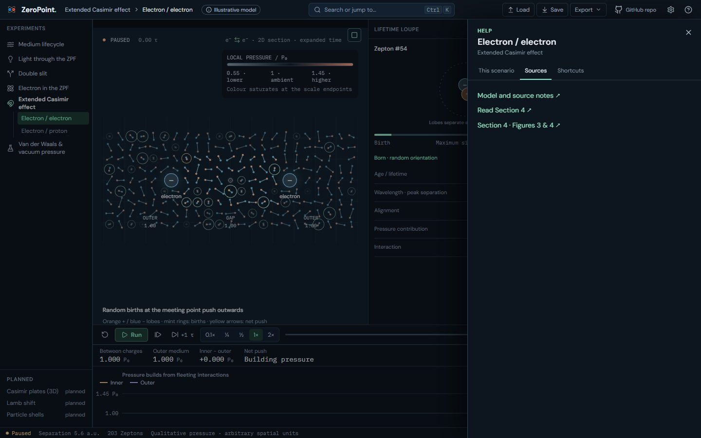
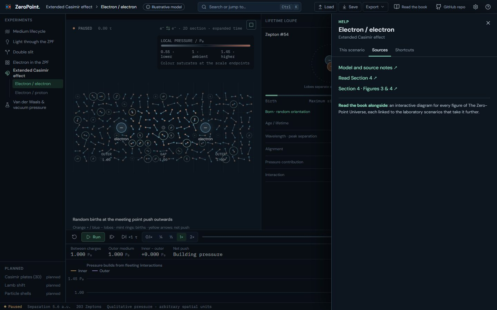
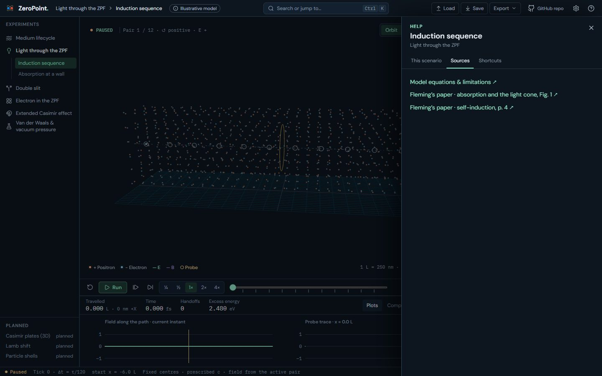
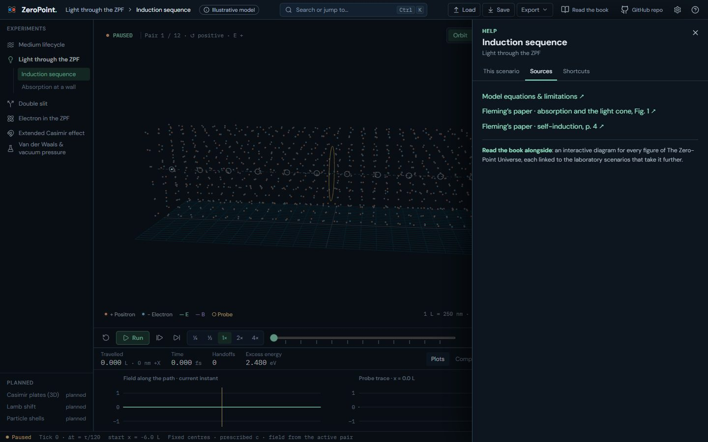

Book companion link: before and after
The laboratory links to the interactive companion to The Zero-Point Universe: a “Read the book” link in the header beside the repository link (not on phones, where it would squeeze the scenario name), and a closing line in every lab’s Help › Sources.
Real screens: "before" runs the worktree given as --before (usually the layer below), and "after" runs this one. Click an image to open it at full size. Regenerate with node scripts/compare-screens.mjs --before ../26d-book-ch16-27 --out docs/ui-previews/26e-book-link --set book-link --title 'Book companion link' --description 'The laboratory links to the interactive companion to The Zero-Point Universe: a “Read the book” link in the header beside the repository link (not on phones, where it would squeeze the scenario name), and a closing line in every lab’s Help › Sources.'.
Header · 1440 px: “Read the book” beside the repository link
Header · 1366 px
Header · 1024 px
Header · 390 px: unchanged, so the scenario name keeps its room (the companion is in Help › Sources)


Extended Casimir · Help › Sources ends with the book companion




Light · Help › Sources ends with the book companion



